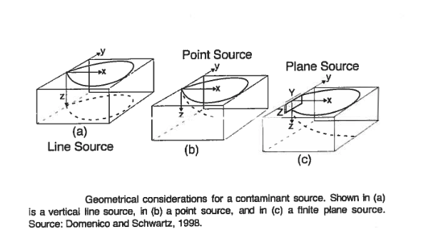

2D and 3D Domenico-Robbins Solutions¶
Domenico and Robbins (1985) conjectured that orthogonal (1D) solutions could be combined using superposition (and convolution) to create approximations to 3D behavior for simple, but useful geometries such as

The Domenico-Robbins (1985) solution is a heuristic simplification of an analytical solution to the advection-dispersion equation with sorption and reaction terms that can be programmed into spreadsheets or scripting environments without a full commitment to learning … The simplification comes with advantages that make it a reasonable alternative to exact solutions for simulations representative of many realistic scenarios.
Applications and Significance¶
The 3D Domenico solution has been widely used by regulators, practitioners, and researchers due its ease of use and analytical origin. However, the lack of mathematical rigor in its derivation has raised questions about its accuracy with differing conclusions about its suitability for continued use.
It has been used as a regulatory tool as recently as 2014 (e.g. User’s Manual for the Quick Domenico Groundwater Fate-and-Transport Model (2014) Pensylvania Department of Environmental Protection).
Its significance lies in its ability to provide a rapid approximation of groundwater contamination scenarios, allowing for improved decision-making and risk assessment. As already stated there is criticism that the Domenico solution is unsuitable for use in professional and research applications because of departures from exact solutions under certain conditions.
Note
Given that all models are approximations its kind of a sorry critique. If you are modeling for real money, it would be prudent to apply multiple tools and not make decisions using only these analytical solutions.
For … a model there is no need to ask the question ‘is the model true?’ If ‘truth’ is to be the ‘whole truth’ the answer must be ‘No.’ The only question of interest is ‘Is the model illuminating and useful?’ (Box, 1979)
It is worth noting that the strongest argument against use of the Domenico solution is that modern computers and readily available $oftware can provide users with exact solutions or well established numerical models so there is no justification for using anything less. This position has some merit where decisions of weight with financial or environmental consequences depend on the modeling result.
As a side note readily available $oftware is NOT easy to install and use; the graphical interfaces tend to tied to specific architecture (x86-64) and specific operating systems. Hence availability does not imply the tools will get used - these simplified models still have value and will for a long time.
2D - Advection-Dispersion, Finite-Width, Constant Source¶
The sketch depicts a finite-length horizontal line source in an aquifer of infinite extent located at \((x,y)=(0,0)\). The length of the source zone (line) is \(Y\).

The source history is depicted beneath the sketch. The system starts with initial concentration of zero everywhere, at time \(t=0\), the concentration in the source line increases to \(C_0\) suddenly, and is maintained at that value from then on.
The transport processes modeled are advection along the x-axis, and dispersion in the x-direction (longitudinal) and in the y-direction (transverse).
The analytical model (Domenico and Robbins, 1985) was obtained by convolution of instantaneous sources (described in detail in Yuan, 1995):
A prototype function is
# prototype 2D domenico robbins ADE function
def c2ad(conc0, distx, disty, dispx, dispy, velocity, time, lenY):
import math
from scipy.special import erf, erfc # scipy needs to already be loaded into the kernel
vadj = velocity / 1.0 # structure is in anticipation of adding adsorbtion and decay
dispXadj = dispx / 1.0
dispYadj = dispy / 1.0
lambadj = 0 / 1.0
uuu = math.sqrt(1.0 + 4.0*lambadj*dispXadj/vadj)
ypp = (disty + 0.5*lenY) / (2*math.sqrt(dispYadj*distx))
ymm = (disty - 0.5*lenY) / (2*math.sqrt(dispYadj*distx))
arg1 = (distx - vadj*time*uuu) / (2*math.sqrt(dispXadj*vadj*time))
arg2 = (distx / (2*dispXadj)) * (1 - uuu)
term0 = conc0 / 4
term1 = math.exp(arg2)
term2 = erfc(arg1)
term3 = (erf(ypp) - erf(ymm))
c2ad = term0 * term1 * term2 * term3
return c2ad
Supply model conditions, evaluate specific point in space and time.
# inputs
c_initial = 100.0 # g/m^3
xx = 100 # meters
yy = 0 # meters
Dx = 0.50 # m^2/day
Dy = 0.05 # m^2/day
V = 1.0 # m/day
time = 100.0 # days
Y = 10.0 # meters
alphax = Dx/V
alphay = Dy/V
output=c2ad(c_initial, xx, yy, alphax, alphay, V, time, Y)
print("x= ",round(xx,2)," y= ",round(yy,2)," t= ",round(time,1)," C(x,y,t) = ",round(output,3))
x= 100 y= 0 t= 100.0 C(x,y,t) = 44.308
Construct 2D contour plots (equivalent to a profile plot)
# make a plot
x_max = 400
y_max = 20
# build a grid
nrows = 50
deltax = (x_max)/nrows
x = []
x.append(1)
for i in range(nrows):
if x[i] == 0.0:
x[i] = 0.00001
x.append(x[i]+deltax)
ncols = 50
deltay = (y_max*2)/(ncols-1)
y = []
y.append(-y_max)
for i in range(1,ncols):
if y[i-1] == 0.0:
y[i-1] = 0.00001
y.append(y[i-1]+deltay)
#y
#y = [i*deltay for i in range(how_many_points)] # constructor notation
#y[0]=0.001
ccc = [[0 for i in range(nrows)] for j in range(ncols)]
for jcol in range(ncols):
for irow in range(nrows):
ccc[irow][jcol] = c2ad(c_initial, x[irow], y[jcol], alphax, alphay, V, time, Y)
#y
my_xyz = [] # empty list
count=0
for irow in range(nrows):
for jcol in range(ncols):
my_xyz.append([ x[irow],y[jcol],ccc[irow][jcol] ])
# print(count)
count=count+1
#print(len(my_xyz))
import pandas
my_xyz = pandas.DataFrame(my_xyz) # convert into a data frame
import numpy
import matplotlib.pyplot
from scipy.interpolate import griddata
# extract lists from the dataframe
coord_x = my_xyz[0].values.tolist() # column 0 of dataframe
coord_y = my_xyz[1].values.tolist() # column 1 of dataframe
coord_z = my_xyz[2].values.tolist() # column 2 of dataframe
#print(min(coord_x), max(coord_x)) # activate to examine the dataframe
#print(min(coord_y), max(coord_y))
coord_xy = numpy.column_stack((coord_x, coord_y))
# Set plotting range in original data units
lon = numpy.linspace(min(coord_x), max(coord_x), 64)
lat = numpy.linspace(min(coord_y), max(coord_y), 64)
X, Y = numpy.meshgrid(lon, lat)
# Grid the data; use linear interpolation (choices are nearest, linear, cubic)
Z = griddata(numpy.array(coord_xy), numpy.array(coord_z), (X, Y), method='cubic')
# Build the map
fig, ax = matplotlib.pyplot.subplots()
fig.set_size_inches(14, 7)
CS = ax.contour(X, Y, Z, levels = [1,25,50,75,99])
ax.clabel(CS, inline=1, fontsize=16)
ax.set_title('Concentration Map at Elapsed Time '+ str(round(time,1))+' days');
Evaluate specific points
3D - Advection-Dispersion, Finite-Area, Constant Production (Injection) Source¶
The sketch depicts a planar source zone Y units wide and Z units tall, centered at (0,0,0).

The analytical model (Domenico and Robbins, 1985) is obtained by convolution of instantaneous sources (described in detail in Yuan, 1995):
Note
This solution is identical to Equation 6.33, with \(\lambda = 0\), \(R = 1\).
A prototype function is
def c3dad(conc0, distx, disty, distz, lenX, lenY, lenZ, dispx, dispy, dispz, velocity, etime):
import math
from scipy.special import erf, erfc # scipy needs to already be loaded into the kernel
# Constant of integration
term1 = conc0 / 8.0
# Centerline axis solution
arg1 = (distx - velocity*etime) / (2*math.sqrt(dispx*velocity*etime)) #dispx is dispersivity
term2 = erfc(arg1)
# Off-axis solution, Y direction
# arg2 = 2.0 * math.sqrt(dispy*distx / velocity)
arg2 = 2.0 * math.sqrt(dispy*distx) #dispy is dispersivity
arg3 = disty + 0.5*lenY
arg4 = disty - 0.5*lenY
term3 = erf(arg3 / arg2) - erf(arg4 / arg2)
# Off-axis solution, Z direction
# arg5 = 2.0 * math.sqrt(dispz*distx / velocity)
arg5 = 2.0 * math.sqrt(dispz*distx) #dispz is dispersivity
arg6 = distz + 0.5*lenZ
arg7 = distz - 0.5*lenZ
term4 = erf(arg6 / arg5) - erf(arg7 / arg5)
# Convolve the solutions
c3dad = term1 * term2 * term3 * term4
return c3dad
Note
This is 3D part is incomplete. Needs
An example
Script to render an xyz density plot